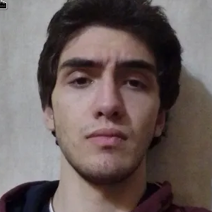
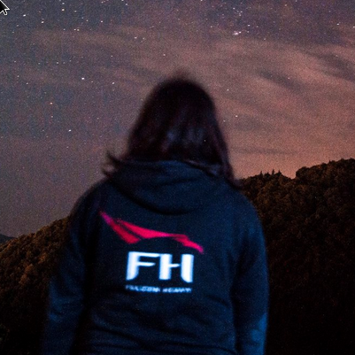

ამ ექშენ-დანგენ კროულერში შენ ხდები უშიშარი მოგზაური, რომელიც შემთხვევით აღმოაჩენს უცნობ მიწისქვეშეთთან შესასვლელს. ყველაფერი იწყება ცნობისმოყვარეობით – მაგრამ დამთავრდება დიდებით, ან დამარცხებით.
ბნელი დანგენები და დამალული პასაჟები
სახიფათო მახეები და თავსატეხები
ორკების ბანდები, რომლებიც საგანძურს იცავენ
ორკების უფროსი – საბოლოო გამოცდა შენი ღირსებისთვის
ვის შეხვდები გზად?
შენი გმირი – უცნობი ავანტიურისტი – შეიარაღებულია გაბედულებითა და მახვილით.
მაგრამ ქვემოთ არ დაგხვდება მხოლოდ დუმილი...
ორკი მებრძოლები: სასტიკი და დაუნდობელი – უყვართ ხაფანგები და თავით შეტევა.
მთავარი უფროსი – ოკი: ორკების მბრძანებელი. მისი დამარცხება მხოლოდ საუკეთესოებს შეუძლიათ.
თამაშის შესაძლებლობები
🎯 რეაქციაზე დაფუძნებული ბრძოლა
🎵 ორიგინალური მუსიკა და ატმოსფერო
🖥️ ოპტიმიზებულია დაბალი რესურსების მქონე კომპიუტერებისთვის
ჩვენ შესახებ
დავით აბაკელია-ჩარტია
ვებ და Unity დეველოპერი, ოპელის დიდი ფანი

ალექსანდრე ჭელიძე
წამყვანი Unity დეველოპერი, გურმანი (შაურმის)

ლუკა ქარჩხაძე
დიზაინერი, აუდიო ინჟინერი, Unity დეველოპერი, დიდი გენიოსი